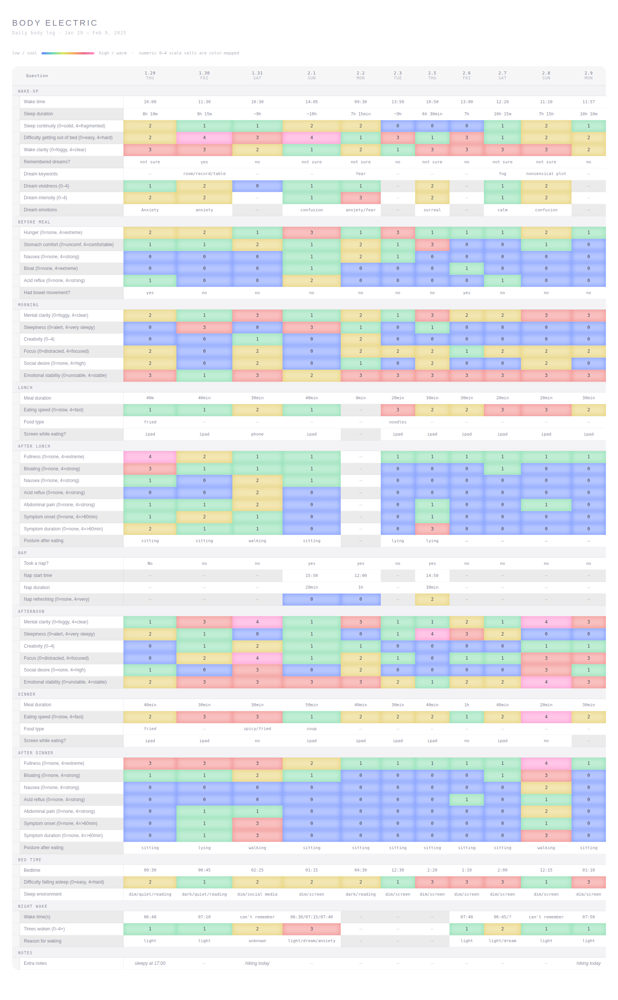
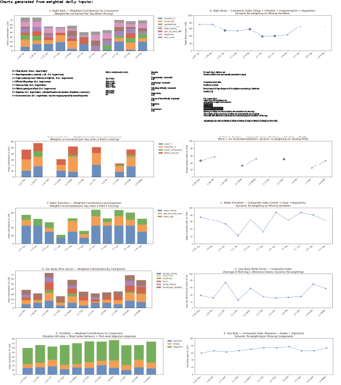
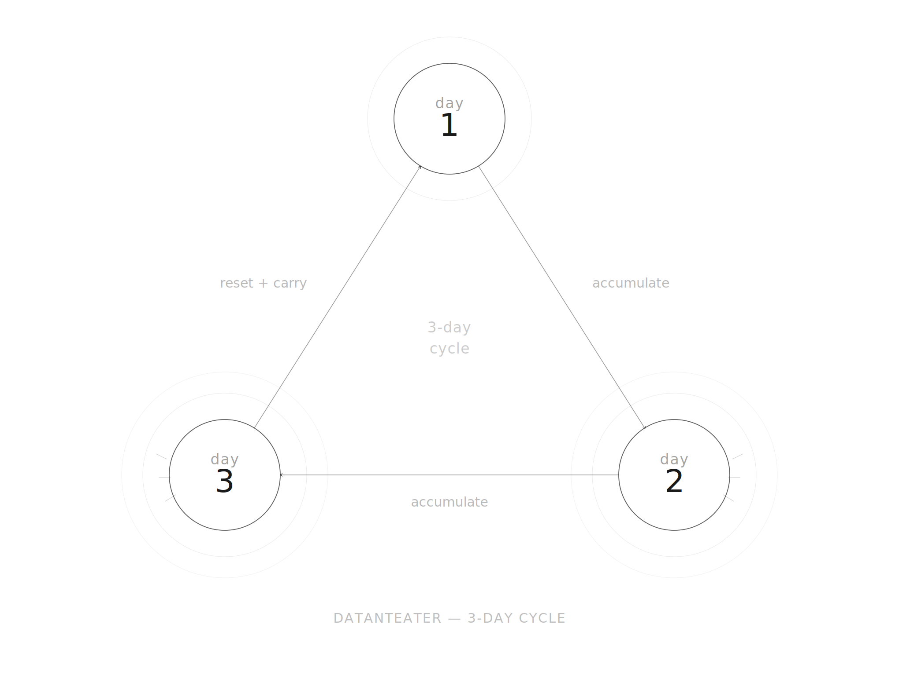
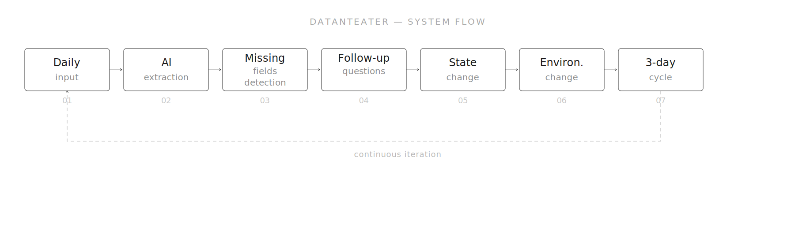
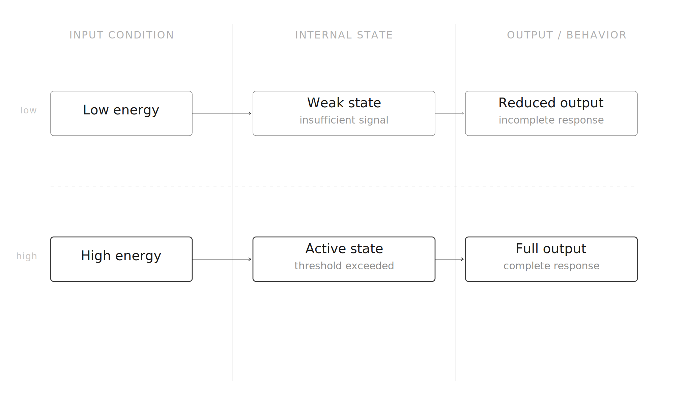

Datanteater /
Body Electric
Welcome to experience
Datanteater
Enter the interactive prototype and experience how daily body data transforms into a digital organism and environment.
Enter PrototypeProject Overview
Body Electric examines the body as a landscape in constant exchange with the world, positioning the self as an environment rather than simply an observer of one. The course asks students to gather and analyze self-data, explore perception through computational tools, and develop new ways of modeling what the body senses but cannot always clearly articulate.
Within this framework, Datanteater translates personal body data into an interactive visual system. The project begins with daily self-tracking around sleep, food intake, digestion, emotion, attention, and social interaction, then transforms these inputs into a changing digital organism and environment. Instead of treating body data as a static record or a productivity dashboard, Datanteater imagines data as something that can be fed, interpreted, cared for, and visually transformed over time.
Daily Self-Tracking
I started by collecting my body data in a structured way. Every day, at fixed times, I answered a set of questions about sleep, hunger, digestion, emotion, clarity, activity, and social condition. These questions were designed as simple ratings, so they were easy to answer and record consistently. Over time, this created a dataset of my daily condition.
This tracking system maps daily life through two parallel biological rhythms: sleep and food intake. Instead of treating the body as a static entity, the project frames the body as a time-based system shaped by recurring cycles of rest, consumption, digestion, alertness, and emotional change.


From Data to Visual Pattern
After collecting the data, I began processing it through weighted calculations. Instead of treating all inputs equally, I assigned different weights to different categories, such as sleep duration, sleep fragmentation, wake-up clarity, regularity, environment, energy, activity, and social interaction.
This allowed the system to emphasize certain aspects of the body condition over others. The weighted values were then combined to generate charts and visual patterns, showing how the body state changed over time.

Full Research Document
Body Electric Research Document
A four-page research document showing the development from daily self-tracking to weighted calculation, visual pattern generation, and the Datanteater system.
Three-Day Cycle
The final interaction is organized as a three-day cycle. Instead of producing a single fixed result, the system evolves through repeated daily inputs. Each day adds new bodily, emotional, and environmental information, allowing the organism and its surrounding landscape to gradually change.

Datanteater System Flow

Datanteater translates body data into a system that evolves over time. The system follows a loop of daily input, AI or keyword-based interpretation, missing field detection, follow-up questions, state change, environment change, and a three-day cycle. Through continuous input and feedback, the body becomes an active process rather than a fixed record.
The idea of Datanteater is partly inspired by Tamagotchi-like systems, where care and input shape the behavior of a virtual creature over time. Instead of treating body data as something to observe, I wanted to build a system where the user interacts with it, and where the data produces visible change.
State and Behavior

The organism's behavior is determined by the relationship between input condition, internal state, and output behavior. Low energy may lead to a weak state and reduced output, while high energy may lead to an active state and fuller response. In this way, the system does not simply display data; it performs data as behavior.
User Experience Process
User experience process video
The user experience is designed as a soft feedback loop. The user enters daily information, the system interprets the input, and the digital organism responds through visual and environmental changes. The result is a personal interface that feels less like a dashboard and more like a companion system.
Reflection
Datanteater works as both a personal interface and a speculative emotional ecology. It asks how AI and data systems might become less extractive, less judgmental, and more reflective. Instead of using body data only for optimization, the project explores how data can become a form of care, attention, and visual transformation.